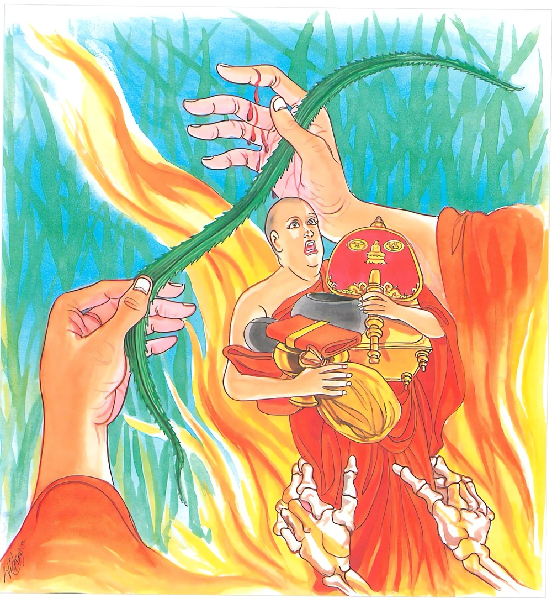

22-5 අකීකරු භික්ෂුවගේ කථා පුවත
මෙම කතාව සද්ධර්ම සාගරයෙන් ද කියවන්න.
කුසො යථා දුග්ගහිතො හත්ථමෙවානුකන්තති
සාමඤ්ඤං දුප්පරාමට්ඨං නිරයායුපකඩ්ඪති.
කිසි කර තණයෙක් වරදවා ගන්නා ලද්දේ (නො පිටට අදනා ලද්දේ) එය ගත් අත ම යම් සේ සිඳී ද, එ පරිද්දෙන් ම මහණදම ද (ඛණ්ඩශීලතාදි වශයෙන්) වරදවා ගන්නා ලද්දේ, නරකයට ඔහු ඇද හෙළයි (නිරයෙහි උපදවයි).

යං කිඤ්චි සිථිලං කම්මං සංකිලිට්ඨං ච යං වතං
සඞ්කස්සරං බ්රහ්මචරියං න තං හොති මහප්ඵලං.
(පසු බැස බැස) ලිහිල් කොට කරන ලද යම් කුශල කර්මයෙක් ඇද්ද, (අගෝචරයෙහි හැසිරීමෙන්) සකිලිටි වූ යම් ව්රතයෙක් (ශීලයෙක්) වේ ද, (ලාභාපේක්ෂායෙන් කළ) සකිලිටි වූ යම් (ධුතාංග) ව්රතයෙක් ඇද්ද, (රැස් වන සඞ්ඝයා දැක මට දඬුවම් කරන්නට රැස් වූහ යි) සැකයෙන් යුතු ව හැසිරීමට කරුණ වූ (හෝ අනුන් විසින් සැක කටයුතු වූ පැවතුම් ඇති) යම් බඹසරෙක් ඇද්ද, ඒ සියල්ල (ප්රතිසන්ධිප්රවෘත්ති විපාක වශයෙන්) මහත්ඵල ඇත්තේ නො වේ.
කයිරා චෙ කයිරාථෙනං දළ්හමෙනං පරක්කමෙ
සඨිලො හි පරිබ්බාජො භිය්යො ආකිරතෙ රජං.
(එහෙයින්) ඉදින් කුශලයක් කරන්නේ නම් එය කරන්නේ ම ය. ඒ කුශලකර්මය ද තර කොට ම (අවස්ථිත සමාදාන ඇතිව ම) කරන්නේ ය. යම් හෙයකින් ඛණ්ඩාදිභාවයට පමුණුවන ලද ශ්රමණධර්මය වඩා ලා ම (බොහෝ කොට ම) රාගාදි රජස ඔහු සතන්හි වත් කරන්නේ ද, එහෙයිනි.
"කුසො යථාති” යන මේ ධර්ම දේශනය ශාස්තෲන් වහන්සේ සැවැත් නුවර ජේතවනාරාමයේ වැඩසිටියදී එක්තරා දුර්වල භික්ෂුවක් නිමිති කරගෙන දේශනා කළහ.
සැවැත් නුවර එක් භික්ෂුවක් නොදැන එක් තණපතක් සිඳ කුකුසක් ඇතිවු නිසා වෙනත් භික්ෂුවක් වෙත එළඹ ඇවැති යමෙක් තණ පතක් සිඳියිද? ඔහුට කුමක්වේදැයි සිහිපත් කරන්න. අවබෝධ කර මෙහි කිසිවරදක් නැත. දේශනාකර මිදේයයි පවසා තමන් ද දෙඅතින් තණ මිටක් කඩා ගත්තේය. භික්ෂුහු එම පුවත බුදුන්ට දැන්වුහ. බුදුහු එම භික්ෂුවට නොයෙක් ආකාරයෙන් ගරහා ධර්මය දේශනා කරන්නේ මේ ගාථාව පැවසීය.
කුසතණ කපන මිනිසා එය වැරදි ලෙස
කැපුවොත් තුවාලයි අත් පා නොසිතු ලෙස
නො පුරන මහණකම විනයෙහි පැනෙන ලෙස
නවතිනු නොමැත - අටමහ නරකයෙක් මිස
වැරදි ලෙසට අල්ලාගත් කුසතණපත ඒ අල්ලාගත් අතම කපා දමයි. එමෙන් වැරදි ලෙස යෙදූ පැවිදි බව ඒ පුද්ගලයා නිරයට ඇද දමයි. ලිහිල් කොට කරන පින්කම ද, කිලිටු වු වෘතය ද, සැකයෙන් හැසිරෙන බඹසර ද මේ සියල්ල මහත්ඵල නොවේ. යම් කුසලයක් කරන්නේ නම් එය මනා කොටම කරන්න. වීර්යයෙන් ම කරන්න. ලිහිල් වු මහණදම බොහෝ සෙයින් රජස් වගුරවයි.
එහි කුසො යනු කොලේ දෙපස තියුණු වු තෘණ වර්ගයකි. අන්තිම වශයෙන් තල් කොලයක්ද යම්සේ කුස යම්සේ දුග්ගහීතෝ ඔහුගේ හත්ථං අනුකන්තති වැරදි ලෙස ගන්නේද නරකලෙසට ගත්තේද ගත් තැනැත්තාගේ අත කපාදමයි පලයි මෙලෙසින්ම ධර්ම සංඛ්යාත පැවිදිකම සාමඤඤමපි සිලයෙන් බැදුනේ වතද වැරදි ලෙස යෙදුවේද නිරයේ උපදී. යන අර්ථයි. සිථිලං දැඩිව නොගෙන සිහිල් ලෙස ගැනීම කර යංකිංචිකම්මං සංකිලට්ඨන්ති - සිථිලං - පසුබට වී ක්රියා කිරිමෙන් ලිහිල් වසයෙන් ගෙන කරනලද යං කිඤ්චි කම්මං කිසියම් ක්රියාවක්. සංකිලිට්ඨන්ති වෛශාවන් සිටින අගෝචර ප්රදේශවල හැසිරිමෙන් කිලිටි වීම. සංකස්සරං - සැකයෙන් යුතුව උපෝසථ කර්මයක් හෝ වෙනත් කාර්යයක් සදහා රැස් වන්නා වු සංඝයා දැක, අද මේ අය මගේ හැසිරීම දැන මා උක්ෂේපනය පිණිස පැමිණියාහුයයි තමන්ගේ හැසිරීම ගැන සැක සහිත වුයේම නතං හොති, මෙබදු වූ ධර්මය හෝ බ්රහ්ම චරියාව ඒ පුද්ගලයාට මහත්ඵල නොවේ. ඔහුගේ මහත්ඵල රහිත භාවය නිසා ඔහුට සිව්පසයෙන් උවැටන් කරන දායකාදීන්ට මහත්ඵල නොවේ. "කයිරාචෙ හෙයින් යමක් කරන් ලද්දම තමන් විසින් නොකළ යුතුය. දළහමෙන පරක්කමෙ - ස්ථිර අදිටනින් යුතුව, වත් සමාදන් වී ක්රියා කළ යුතුය. පරිබ්බාජො - ධර්මය පැහැදුනු සිතින් යුක්තව. කඩින් කඩ නො කොට, කළ යුතු වන්නේය. භීය්යා ආකිරත රජන්ති - අභ්යන්තරයෙහි විද්යාමාන වන්නාවු රාග රජස්වලට මෙබඳු වූ ධර්මය වට්ටන්නට පත් කරන්නට නො හැකි වන්නේය. ඔහුගේ මතෙහි වූ ද, අන්ය වූ ද රාගාදී රජස් ඉවත් හළය, ඉවතට වත්කරන්නේය යන අර්ථයි.
දේශනාවසානයේ බොහෝ දෙනා සෝවාන් ආදී මාර්ග ඵලවලට පැමිණියාහුය ඒ භික්ෂුවද සංවරයෙහි පිහිටා පසුව මනාසේ දක්නා නුවණ ඇතිකොට පත් වුයේය.